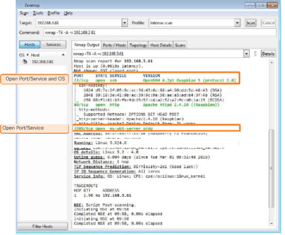
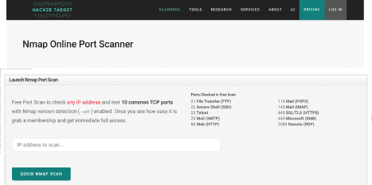
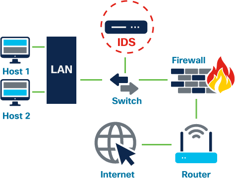
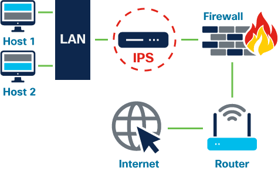
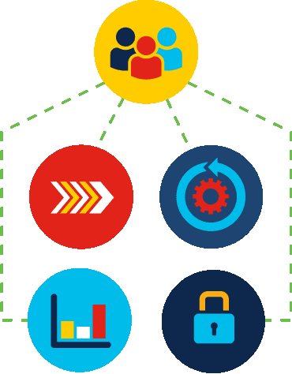

Explain the basics of being safe online, including what cybersecurity is and its potential impact.
Explain the most common cyber threats, attacks and vulnerabilities.
Explain how organizations can protect their operations against these attacks.
Access various information and resources to explore the different career options in cybersecurity.
Module 4 - Protecting the Organization
Welcome to this module, which will outline the various strategies and tools used by cybersecurity
professionals to protect an organization’s network, data and equipment from cybercrime.
You only have to look at the news to understand that all organizations, regardless of type, size or
location, are at risk of a cyber attack. It seems that no one is safe.
So is there anything you can do to help protect an organization from a targeted attack? And with many in
the security industry predicting that it’s not a case of ‘if’ but ‘when’ a cybersecurity breach will
occur, how can you respond to ensure that it has minimal impact?
This module will highlight the actions that you can take to help answer these questions.
Chapter 4.1 - Cybersecurity Devices and Technologies
There is no single security appliance or piece of technology that will solve all the network security
needs in an organization. You must consider what tools will be most effective as part of your security
system.
4.1.1 Security Appliances
Security appliances can be standalone devices like a router or software tools that are run on a
network device. They fall into six general categories.
Find out more about each of these.
Routers
While routers are primarily used to interconnect various network segments together, they
usually also provide basic traffic filtering capabilities. This information can help you
define which computers from a given network segment can communicate with which network
segments.
Firewalls
Firewalls can look deeper into the network traffic itself and identify malicious behavior
that has to be blocked. Firewalls can have sophisticated security policies applied to the
traffic that is passing through them.
Intrusion prevention systems
IPS systems use a set of traffic signatures that match and block malicious traffic and
attacks.
Virtual private networks
VPN systems let remote employees use a secure encrypted tunnel from their mobile computer
and securely connect back to the organization’s network. VPN systems can also securely
interconnect branch offices with the central office network.
Antimalware or antivirus
These systems use signatures or behavioral analysis of applications to identify and block
malicious code from being executed.
Other security devices
Other security devices include web and email security appliances, decryption devices, client
access control servers and security management systems.
4.1.2 Which Is It?
You ask the Chief Technology Officer (CTO), who explains that the following security appliances are
in place. Can you identify which category each of these falls into?
Select an option from each!
Cisco’s ISR 4000 provides routing, filtering and encryption in a single platform.
Cisco’s Firepower 4100 Series shows what’s happening on the network so that you can act
faster in the face of a cyber attack
Cisco’s AnyConnect Secure Mobility Client empowers remote workers with highly secure access
to @Αpollo's network from any device, at any time, in any location
Cisco’s AMP provides next-generation endpoint protection, scanning and constantly monitoring
files for malicious behavior
explanations
In summary, the security appliances in place are:
Cisco Integrated Services Router (ISR) 4000. These routers have many capabilities, including
traffic filtering, the ability to run an intrusion prevention system (IPS), encryption and
VPN capabilities for secure encrypted tunneling.
Cisco’s Firepower 4100 Series is a next generation firewall that has all the capabilities of
an ISR router, as well as advanced network management and analytics. It can help you to see
what’s happening on the network so that you can detect attacks earlier.
Cisco’s AnyConnect Secure Mobility Client is a VPN system that lets remote workers use a
secure encrypted tunnel from their mobile computer to securely connect back to the
organization’s network. All Cisco security appliances are equipped with a VPN server and
client technology, designed for secure encrypted tunneling.
Cisco’s Advanced Malware Protection (AMP) is installed in next generation Cisco routers,
firewalls, IPS devices and web and email security appliances. It can also be installed as
software in host computers.
4.1.3 Firewalls
In computer networking, a firewall is designed to control or filter which communications are allowed
in and which are allowed out of a device or network. A firewall can be installed on a single
computer with the purpose of protecting that one computer (host-based firewall) or it can be a
standalone network device that protects an entire network of computers and all of the host devices
on that network (network-based firewall)
As computer and network attacks have become more sophisticated, new types of firewalls have been
developed, which serve different purposes.
Find out more about the common firewall types.
Network layer firewall
This filters communications based on source and destination IP addresses.
Transport layer firewall
Filters communications based on source and destination data ports, as well as connection states.
Application layer firewall
Filters communications based on an application, program or service.
Context aware layer firewall
Filters communications based on the user, device, role, application type and threat profile.
Proxy server
Filters web content requests like URLs, domain names and media types.
Reverse proxy server
Placed in front of web servers, reverse proxy servers protect, hide, offload and distribute
access to web servers.
Network Address Translation (NAT) firewall
This firewall hides or masquerades the private addresses of network hosts.
Host-based firewall
Filters ports and system service calls on a single computer operating system
4.1.4 Which One?
The CTO forgot to mention that @Apollo has a few firewalls in place. Based on the following
statements, can you identify what category of firewall these are? Answer correctly to earn valuable
defender points that will help safeguard @Apollo from attack.
Select an option from each!
A small, internal local area network with computers requires access to the Internet using a
single Internet connection
By default, Windows tries to block access to applications running on Windows PCs from other
computers in the network
Employees using computers on the network are not permitted access to specific URLs, such as
gambling sites
explanations
Remember:
A NAT firewall filters communications based on source and destination IP addresses.
A proxy server filters web content requests like URLs, domain names and media types.
A host-based firewall filters ports and system service calls on a single computer operating
system.
4.1.5 Port Scanning
In networking, each application running on a device is assigned an identifier called a port number.
This port number is used on both ends of the transmission so that the right data is passed to the
correct application. Port scanning is a process of probing a computer, server or other network host
for open ports. It can be used maliciously as a reconnaissance tool to identify the operating system
and services running on a computer or host, or it can be used harmlessly by a network administrator
to verify network security policies on the network.
how to carry out a port scan on a computer on your local home network.
The NMap project
Download and launch a port scanning tool like Zenmap. Enter the IP address of your computer,
choose a default scanning profile and press ‘scan.’
The scan will report any services that are running, such as web or email services, and their
port numbers.
The scan report

The scan will also report one of the following responses:
‘Open’ or ‘Accepted’ means that the port or service running on the computer can be
accessed by other network devices.
‘Closed,’ ‘Denied’ or ‘Not Listening’ means that the port or service is not running on
the computer and therefore cannot be exploited.
‘Filtered,’ ‘Dropped’ or ‘Blocked’ means that access to the port or service is blocked
by a firewall and therefore it cannot be exploited.
Execute a port scan

To execute a port scan from outside of your network, you will need to run it against your
firewall or router’s public IP address.
Enter the query ‘what is my IP address?’ into a search engine such as Google to find out
this information.
Go to the
Nmap Online Port Scanner,
enter your public IP address in the input box and press ‘Quick Nmap Scan.’ If the response
is open for ports 21, 22, 25, 80, 443 or 3389 then most likely, port forwarding has been
enabled on your router or firewall and you are running servers on your private network.
4.1.6 What Does It Mean?
Your manager asks you to evaluate @Apollo’s computer network’s firewall and port security. You
execute a port scan, which returns an ‘open’ state response.
Complete the sentence below by filling in the blanks to understand what this means.
The port scan reported an ‘open’ state response. This means that the service running on the
network
by other network devices. Therefore, if the service contains a
vulnerability, it
by an attacker.
explanations
Remember:
An ‘open’ state response means that the service running on the network can be accessed by
other networks and if the service does contain a vulnerability, it could be exploited by an
attacker who could potentially gain access to computers on the network.
It’s important to note that port scanning should be seen as a precursor to a network attack
and therefore should never be carried out on public servers on the internet or on an
organization's network without permission.
4.1.7 Intrusion Detection and Prevention Systems
Intrusion detection systems (IDSs) and intrusion prevention systems (IPSs) are security measures
deployed on a network to detect and prevent malicious activities.
IDS

An IDS can either be a dedicated network device or one of several tools in a server,
firewall or even a host computer operating system, such as Windows or Linux, that scans data
against a database of rules or attack signatures, looking for malicious traffic.
If a match is detected, the IDS will log the detection and create an alert for a network
administrator. It will not take action and therefore it will not prevent attacks from
happening. The job of the IDS is to detect, log and report.
The scanning performed by the IDS slows down the network (known as latency). To prevent
network delay, an IDS is usually placed offline, separate from regular network traffic. Data
is copied or mirrored by a switch and then forwarded to the IDS for offline detection.
IPS

An IPS can block or deny traffic based on a positive rule or signature match. One of the
most well-known IPS/IDS systems is Snort. The commercial version of Snort is Cisco’s
Sourcefire. Sourcefire can perform real-time traffic and port analysis, logging, content
searching and matching, as well as detect probes, attacks and execute port scans. It also
integrates with other third-party tools for reporting, performance and log analysis.
Software is not perfect. And more than ever before, hackers are exploiting flaws in software before
creators get a chance to fix them. When they do this, hackers are said to have carried out a
zero-day attack!
The ability to detect these attacks in real time, and stop them immediately, or within minutes of
occurring, is the ultimate goal.
4.1.8 Real-Time Detection
Many organizations today are unable to detect attacks until days or even months after they occur.
Active scanning
Detecting attacks in real time requires actively scanning for attacks using firewall and
IDS/IPS network devices. Next generation client and server malware detection with
connections to online global threat centers must also be used. Today, active scanning
devices and software must detect network anomalies using context-based analysis and behavior
detection.
Real Real-Time detection and response
DDoS is one of the biggest attack threats requiring real-time detection and response. For
many organizations, regularly occurring DDoS attacks cripple Internet servers and network
availability. These attacks are extremely difficult to defend against because the attacks
originate from hundreds, even thousands, of zombie hosts, and the attacks appear as
legitimate traffic.
4.1.9 Protecting Against Malware
One way of defending against zero-day attacks and advanced persistent threats (APTs) is to use an
enterprise-level advanced malware detection solution, like Cisco’s Advanced Malware Protection (AMP)
Threat Grid.

This is client/server software that can be deployed on host endpoints, as a standalone server or on
other network security devices. It analyzes millions of files and correlates them against hundreds
of millions of other analyzed malware artifacts for behaviors that reveal an APT. This approach
provides a global view of malware attacks, campaigns and their distribution.
Find out more about the benefits of Cisco's Threat Grid.
Secure Operations Center team
The Threat Grid allows the Cisco Secure Operations Center team to gather more accurate,
actionable data.
Incidence Response team
The Incidence Response team therefore has access to forensically sound information from which it
can more quickly analyze and understand suspicious behaviors.
Threat Intelligence team
Using this analysis, the Threat Intelligence team can proactively improve the organization’s
security infrastructure.
Security Infrastructure Engineering team
Overall, the Security Infrastructure Engineering team is able to consume and act on threat
information faster, often in an automated way.